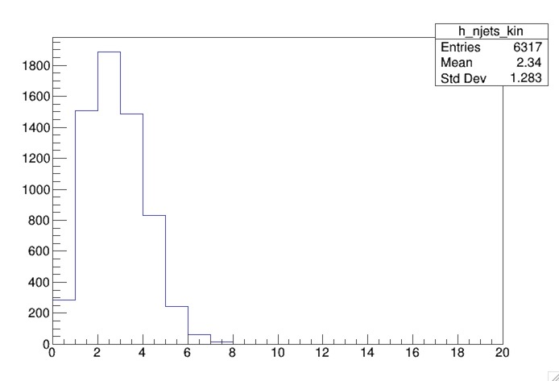

Analysis selection
Overview
Teaching: 15 min
Exercises: 25 minQuestions
How can I create a simple analysis selection?
Objectives
Gain understanding about making a selection based on the signal
Purpose of analysis selection
As a reminder, the sample you hhave been running is pp -> ZH -> llbb. As seen in the Feynman diagram, the Higgs boson decays to 2 b-jets, and the Z decays to 2 leptons.

Therefore, kinematics about the final state particles should help us determine their parent boson and help us discriminate this signal from any potential background.
Object selection
The final state objects are the jets, electrons, and muons. We have defined them using pt and eta cuts in their respective SelectionHelper libraries. For b-jets, we have also if a jet is b-tagged.
Event selection
Now that we have our objects, we now need to define our event. We apply requirements on the objects that pass the pt and eta selections to select ZH events. We can achieve this by understanding the properties of bosons and their decay products.
Selecting Higgs candidates
Our MC include a higgs that decays to 2 b-jets. Our analysis therefore selects at least 2 jets. To determine if the jets originate from the Higgs boson, we can calculate the invariant mass of the jets.
if( jets_kin.size()>=2 ){
h_mjj_kin->Fill( (jets_kin.at(0).p4()+jets_kin.at(1).p4()).M()/1000. );
}
Here, we see that we check the size of the jets_kin vector. This vector contains the jets that have passed the isGoodJet function. The function .p4() gives the four-momentum of the particle.
The invariant mass of the jets is the mass of the vectorr sum of the two jets. This quantity is divided by 1000 to convert from MeV to TeV.
The h_mjj_kin_cal is the invariant of the calibrated jets that pass the pt and eta requirements. Since we have calibrated jets, we should use those in our event selection.
After running our code, we produce an output file, myOutputFile.root.
We can look at the distributions before applying additional selections. To do this, we open our file in root.
root -l myOutputFile.root
This open a root terminal and attaches a file
root [0]
Attaching file myOutputFile.root as _file0...
(TFile *) 0x29435b0
root [1]
To view the contents of the file, type .ls.
root [1] .ls
TFile** myOutputFile.root
TFile* myOutputFile.root
KEY: TH1D h_njets_raw;1
KEY: TH1D h_njets_kin;1
KEY: TH1D h_njets_raw_cal;1
KEY: TH1D h_njets_kin_cal;1
KEY: TH1D h_mjj_raw;1
KEY: TH1D h_mjj_kin;1
KEY: TH1D h_mjj_raw_cal;1
KEY: TH1D h_mjj_kin_cal;1
To visualize a histogram, you need to use the Draw() function with the name of the histogram you wish to draw
root [2] h_mjj_kin_cal->Draw()
This will open a canvas wiith the invariant mass plot that you have filled when you ran the AnalysisPayload code.

We see a peak around 125 GeV, the mass of the Higgs boson, but we also see a long tail.
Looking at additional distributions can help us understand what is happening. Let’s draw the h_njets_kin_cal histogram
root [2] h_njets_kin_cal->Draw()
The canvas produces the number of calibrated good jets. 
The event has more than 2 jets; therefore there is ambiguity as to which jet came from the Higgs boson’s decay. We can make use of the fact that the jets originating from the Higgs are b-jets by requiring that 1 or both jets are b-tagged.
Let’s create some empty histograms for the number of b-jets, mjj for at least 1 b-tagged jet, and mjj for at least 2 b-tagged jets.
TH1D *h_nbjets_kin_cal = new TH1D("h_nbjets_kin_cal","",20,0,20);
TH1D *h_mjj_kin_cal_1b = new TH1D("h_mjj_kin_cal_1b","",100,0,500);
TH1D *h_mjj_kin_cal_2b = new TH1D("h_mjj_kin_cal_2b","",100,0,500);
We also define a counter for the number of b-tagged jets in the event, n_bjet after we load the event.
event.getEntry( i );
int n_bjet = 0;
We will increment the n_bjet counter if the good calibrated jet is b-tagged. To check if the jet is b-tagged, we will use the function isJetBFlavor from the JetSelectionHelper tool.
The code should look as follows
if( myJetTool.isJetGood(calibratedjet) ){
jets_kin_cal.push_back(*calibratedjet);
if ( myJetTool.isJetBFlavor(calibratedjet)){
n_bjet ++;
}
}
Now, we can fill our mjj histograms with the invariant mass of calibrated dijet system based on the number of b-jets, as shown in the following code.
if( jets_kin_cal.size()>=2 ){
h_mjj_kin_cal->Fill( (jets_kin_cal.at(0).p4()+jets_kin_cal.at(1).p4()).M()/1000. );
h_nbjets_kin_cal->Fill(n_bjet);
if (n_bjet >= 1) h_mjj_kin_cal_1b->Fill( (jets_kin_cal.at(0).p4()+jets_kin_cal.at(1).p4()).M()/1000. );
if (n_bjet >= 2) h_mjj_kin_cal_2b->Fill( (jets_kin_cal.at(0).p4()+jets_kin_cal.at(1).p4()).M()/1000. );
}
We have filled our histograms if there are at least 2 good calibrated jets. We then check the number of b-jets before filling the appropriate histograms.
The final step is writing the histograms to file.
h_nbjets_kin_cal->Write();
h_mjj_kin_cal_1b->Write();
h_mjj_kin_cal_2b->Write();
Now you need to compile and run the code to produce a new output. You should be able to see the new histograms you have added.
root [1] .ls
TFile** myOutputFile.root
TFile* myOutputFile.root
KEY: TH1D h_njets_raw;1
KEY: TH1D h_njets_kin;1
KEY: TH1D h_njets_raw_cal;1
KEY: TH1D h_njets_kin_cal;1
KEY: TH1D h_nbjets_kin_cal;1
KEY: TH1D h_mjj_kin_cal_1b;1
KEY: TH1D h_mjj_kin_cal_2b;1
KEY: TH1D h_mjj_raw;1
KEY: TH1D h_mjj_kin;1
KEY: TH1D h_mjj_raw_cal;1
KEY: TH1D h_mjj_kin_cal;1
You should draw h_mjj_kin_cal_2b. You will notice that there are less events but the peak around the Higgs mass is more pronounced.

Selecting Z candidates
Our MC only includes leptonic decays of the Z boson, and given that the Z boson is a neutral particle and decays to 2 leptons, we should require exactly 2 leptons that are same flavor and opposite charge.
Let’s first create a histogram to store our invariant mass of the two leptons.
TH1D *h_mll_kin = new TH1D("h_mll_kin", "", 80, 0, 200);
We only want to fill this histogram if we have exactly 2 electrons and their charges are opposite. The invariant mass of the two leptons is calculated the same way we did this for jets.
if ( electrons_kin.size() == 2 && electrons_kin.at(0).charge() != electrons_kin.at(1).charge()){
h_mll_kin->Fill( (electrons_kin.at(0).p4()+electrons_kin.at(1).p4()).M()/1000. );
}
We also need to make sure we write the histogram to our output file.
h_mll_kin->Write();
After you compile and run, you will see h_mll_kin in your output file, myOutputFile.root. You should draw the distribution and you will see a peak at the Z-boson mass.
Adding muons
Modify the if statement above to fill
h_mll_kinif there are exactly 2 electrons or 2 muons and their charges are opposite.
Key Points
You can apply a selection on objects to help look for a signal